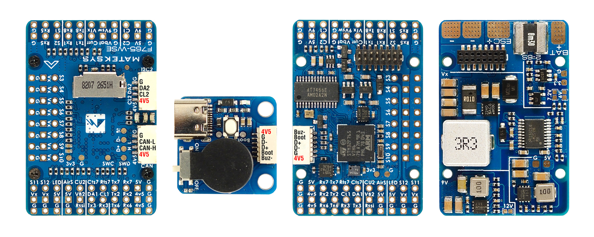

Mateksys F765-WSE¶
the above image and some content courtesy of mateksys.com
Note
Support for this board is available with ArduPilot 4.1 and higher
Specifications¶
Processor
STM32F765VIH6 ARM (216MHz)
Sensors
ICM-42688-P
DPS310
Voltage & 90A continuous, 220A peak current sensor
Power
6.8V ~ 30V DC input power
5V 2A BEC for peripherals
9/12V 2A BEC for video
5/6/7.2V 8A BEC for servos
Interfaces
6.5x UARTS
12x PWM outputs
1x RC input PWM/PPM, SBUS
2x I2C ports for external compass, airspeed sensor, etc.
CAN port
USB port
6 ADC
Dual Switchable Camera inputs
Built-in OSD (AT7456E)
Size and Dimensions
44mm x 29mm x 14.5mm
22g
See mateksys.com for more detailed specifications and wiring diagrams (ArduPilot connections may vary slightly due to different UART usage).
ArduPilot Firmware: MatekF7656-SE
Camera and Supply Switch¶
Switching between the two camera inputs, C1 (default on) or C2, and between on (default) and off of Vsw (jumper selectable selectable supply), can be implemented using the Relay function of ArduPilot and assigning the relays to an RCx_OPTION switch on the transmitter.
Set the RELAYx_PIN to “81” for on/off of Vsw, and to “82” to control the camera switching.
Then select an RC channel for control (Chx) and set its RCx_OPTION to the appropriate Relay (1-4) that you had set its pin parameter above.
For example, use Channel 10 to control the camera switch using Relay 2:
RELAY_PIN2 = “82”
RC10_OPTION = “34” (Relay2 Control)
Note
setting Relay on/high assigned for Vsw will turn off that supply. Likewise, setting on/high for the Relay for camera, will switch from Camera 1 to Camera 2.
Default UART order¶
SERIAL0 = console = USB
SERIAL1 = Telemetry1 = UART7 (support CTS and RTS signaling)
SERIAL2 = Telemetry2 = USART1
SERIAL3 = GPS1 = USART2
SERIAL4 = GPS2 = USART3
SERIAL5 = USER = UART8
SERIAL7 = USER = UART6 (TX only unless BRD_ALT_CONFIG = 1, then RX available also)
SERIAL8 = USER = UART5 (RX only, for ESC telemetry)
Serial port protocols (Telem, GPS, etc.) can be adjusted to personal preferences.
RC Input¶
The Rx6 pin, which by default is mapped to a timer input, can be used for all ArduPilot supported receiver protocols, except CRSF/ELRS and SRXL2 which require a true UART connection. However, FPort, when connected in this manner, will only provide RC without telemetry.
To allow CRSF and embedded telemetry available in Fport, CRSF, and SRXL2 receivers, the Rx6 pin can also be configured to be used as true UART RX pin for use with bi-directional systems by setting the BRD_ALT_CONFIG to “1” so it becomes the SERIAL6 port’s RX input pin.
With this option, SERIAL7_PROTOCOL must be set to “23”, and:
PPM is not supported.
SBUS/DSM/SRXL connects to the Rx6 pin, but SBUS requires that the SERIAL7_OPTIONS be set to “3”.
FPort requires connection to T6 and SERIAL7_OPTIONS be set to “7”.
CRSF also requires a Tx6 connection, in addition to Rx6, and automatically provides telemetry. Set SERIAL7_OPTIONS to “0”.
SRXL2 requires a connection to Tx6 and automatically provides telemetry. Set SERIAL7_OPTIONS to “4”.
Any UART can be used for RC system connections in ArduPilot also, and is compatible with all protocols except PPM. See Radio Control Systems for details.
Dshot capability¶
All motor/servo outputs PWM capable, and 1-6 are Dshot capable. However, mixing Dshot and normal PWM operation for outputs is restricted into groups, ie. enabling Dshot for an output in a group requires that ALL outputs in that group be configured and used as Dshot, rather than PWM outputs. The output groups that must be the same (PWM rate or Dshot, when configured as a normal servo/motor output) are: 1/2, 3/4, 5/6, 7/8/9/10, 11/12, and 13(LED). Where to Buy ============
see this list of Mateksys Distributors
Connecting a GPS/Compass module¶
This board does not include a GPS or compass so an external GPS/compass should be connected in order for autonomous modes to function.
If the GPS is attached to UART2 TX/RX and powered from the adjacent 4.5V pins, it will be powered when connected via USB, as would the RX if powered from the adjacent 4.5V pins to UART6.
A battery must be plugged in for power to be provided to the pins marked 5V on the board.
I2C Airspeed Sensor¶
If attached to CL2/DA2, set ARSPD_BUS = 0, as well as appropriate ARSPD_TYPE.
If attached to CL1/DA1, set ARSPD_BUS = 1, as well as appropriate ARSPD_TYPE.
Battery Monitor Configuration¶
These settings are set as defaults when the firmware is loaded. However, if they are ever lost, you can manually set the parameters:
Enable Battery monitor.
BATT_MONITOR =4
Then reboot.
BATT_VOLT_MULT 21.0
BATT_AMP_PERVLT 66.7
Note
this autopilot uses a high precision current sensor which is sensitive to ESC switching noise. Be sure to use the bypass capacitor provided. In some cases, the ESCs themselves will need additional 200-330uF low ESR capacitors on their power inputs, if they do not incorporate them already. See Matek FAQs for more information.
Firmware¶
Firmware for this board can be found here in sub-folders labeled “MatekF765-SE”.
[copywiki destination=”plane,copter,rover,blimp”]